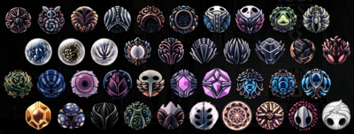
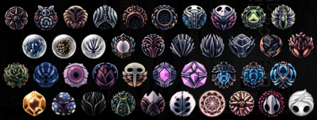
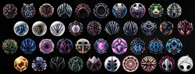

Personagens
Funcionalidades
Bancos
Bancos
Os bancos são a forma de salvar o jogo. Toda vez que o jogador sai e entra do jogo
ele
reaparece
no último banco que se sentou. Os bancos são o momento de descanso e ócio, que
recarrega
a vida e a alma do Knight. Neles também é possível equipar e desequipar amuletos.

Ferrão e suas evoluções
Ferrão e suas evoluções
O Ferrão é a arma que o Knight utiliza para realizar ataques e enfrentar inimigos.
É possível melhorar o Ferrão para que ele dê mais dano através do ferreiro que pode
ser
encontrado durante a exploração do reino de Hallownest.
Alma
Alma
A alma é uma força arcana que dá vida aos insetos,
ela pode ser gasta e adquirida. Através dela também é possível
utilizar feitiços e se curar de ataques inimigos, conhecimento trazido pelos
xamãs caramujos. Há várias formas de adquirir alma, uma delas é atacando
inimigos,
outra forma seria pelos totens de alma que forma construídos por uma civilização
antiga
anterior a de Hallownest.
Fragmento de Receptáculo
Fragmento de Receptáculo
Ao coletar três Fragmentos de Receptáculo é adquirido um Receptáculo de Alma
que aumenta o máximo de alma que o Knight pode coletar de uma vez. Espalhados pelo
reino
há 9 fragmentos, sendo então possível aumentar o máximo de alma em 3 vezes.
Máscaras
Máscaras
A vida do Knight é representada por máscaras. A cada dano recebido uma ou duas das
máscaras
é gasta, a depender da forma que levou dano ou do inimigo. O jogador começa com 5
máscaras e
pode conseguir até 9. É possível recuperar a vida através da habilidade de focar
utilizando
alma ou se sentando em um banco.
Fragmentos de Máscaras
Fragmentos de Máscaras
Fragmentos de Máscaras estão espalhados pelas entranhas de Hallownest, ao coletar
4 desses fragmentos é adquirido uma Máscara Antiga que aumenta a vida do Knight em
um.
Há 16 Fragmentos de Máscaras sendo possível aumentar a vida em 4.
Lifeblood
Lifeblood
Pelo mapa do jogo é possível encontrar essas estruturas azuis, ao quebrá-las o
jogador
adquire máscara azuis que ficam ao lado das suas máscaras normais. As máscaras azuis
seriam uma
forma de vida temporária, ou seja, o jogador adquire vida a mais, mas quando toma
dano e
as
máscaras são gastas elas não podem mais ser recuperadas.
Ataques, Feitiços e Itens
Ataques, Feitiços e Itens
O jogador possui formas de conseguir novas habilidades. Existem os treinamentos que
o
ensina ataques diferentes com o ferrão (a espada). Os feitiços são outras formas de
ataque
que utilizam alma para serem usados. Por último, os itens, dão habilidades
geralmente
relacionadas a mobilidade, permitindo que o jogador se movimente mais livremente,
como o
pulo duplo. Também há itens que são necessários para acessar certos locais.
Geos
Geos
São a base da economia de Hallownest, é por meio deles que é possível comprar itens
dos lojistas. Geos podem ser conseguidos de diversas formas, como matando mobs, em
baús,
em pedras de geo entre outros.

Sombra
Sombra
Caso o Knight perca todas suas máscaras ele morre e retorna para o último banco que
se
sentou.
Ele retorna sem seus geos e com sua alma "quebrada" (com menos capacidade). Mas nem
tudo
está perdido! Para recuperara-los basta o jogador retornar ao local que morreu.
Chegando
lá,
encontrará a Sombra, uma cópia exata do Knight, ela flutua e é capaz de realizar
qualquer ataque
que ele tenha aprendido. Ao derrotá-la, o jogador recupera tudo, caso ele acabe
morrendo
de novo
antes de fazer isso (para própria Sombra ou para outra coisa) ele perde todos seus
geos
mas sua
capacidade de alma volta ao normal.
Amuletos
Amuletos
Os amuletos dão ao Knight habilidades especiais ou aumentam algum status ou feitiço
dele.
Eles são itens equipáveis, sendo necessário sentar-se em um banco para fazer isso.
Cada amuleto possui uma quantidade de encaixes que consome ao ser equipado, dessa
forma
algumas
combinações de amuletos não são possíveis. O jogador começa com 3 encaixes, mas é
possível
adquirir encaixes explorando o mundo com um máximo possível de 11 encaixes.
 


Os Túneis
Os Túneis
Os túneis são uma forma de se locomover pelo mapa de forma rápida, para isso é
necessário
desbloquear suas estações através de geos. Os túneis foram feitos pelos
besouros-cervos,
que transportavam os moradores de Hallownest pelas áreas do mapa que possuíam
estações.
No momento atual do jogo, com a ruína do reino, os túneis foram fechados, por isso é
necessário
pagar uma quantia para reativá-los, e apenas um besouro-cervo restou, que apesar de
estar com a
memória prejudicada, se mantem fiel ao seu papel de transportador.